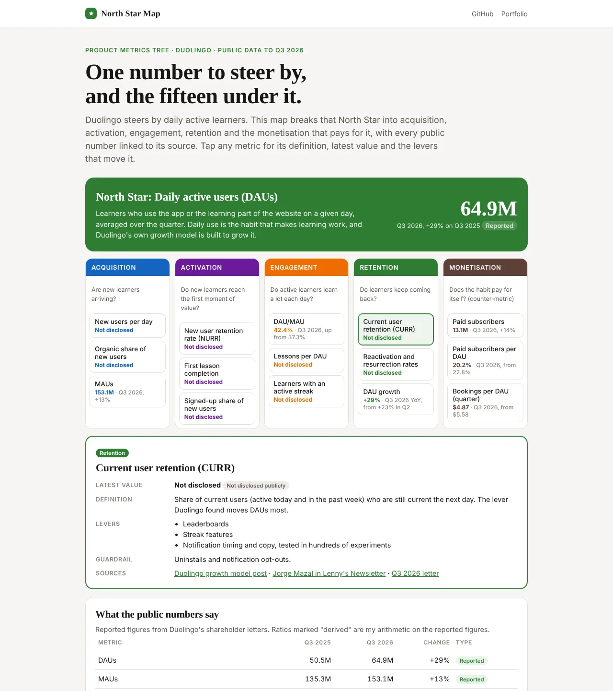

The problem
Most metric trees in portfolios use made-up numbers. I wanted one on a real company, honest about what is not disclosed, with a working model of how the inputs move the North Star.

What it does
- Metrics tree in five branches, each metric with definition, levers, guardrail and sources.
- Labels on every value: reported, derived or not disclosed.
- Public numbers table, Q3 2025 against Q3 2026.
- Growth model simulator with nine adjustable rates.
Findings and decisions
Confirmed, derived from reported figures
Users are growing faster than payers
DAUs rose 29% while paid subscribers rose 14%, so paid subscribers per DAU fell from 22.8% to 20.2%. Duolingo says this is a deliberate user-first choice for 2026.
Illustrative model
Current user retention is the biggest lever
With my own assumed rates, a 2% better CURR adds about 15% to DAUs after a year, around ten times the next lever. The structure is Duolingo's, the rates are mine.
What I would do next
- Add a second company with a different model.
- Quarterly history charts.
- Let visitors build their own tree.